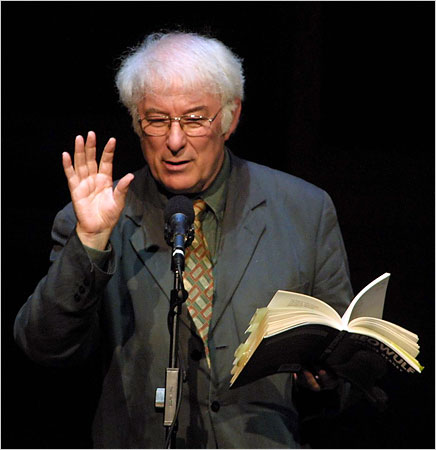

eowulf
The
Beowulf
poet is unknown, though the epic is generally the beginning of English literary scholarship. Currently, the definitive translation is considered to be that of Seamus Heaney, a work that took him a decade to complete.
